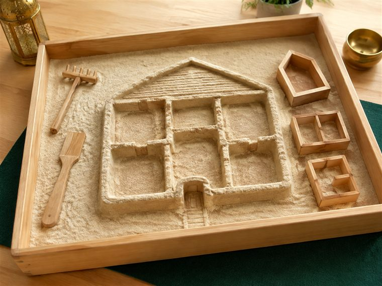
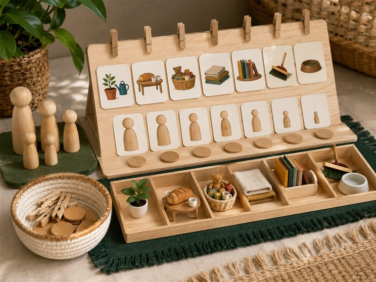
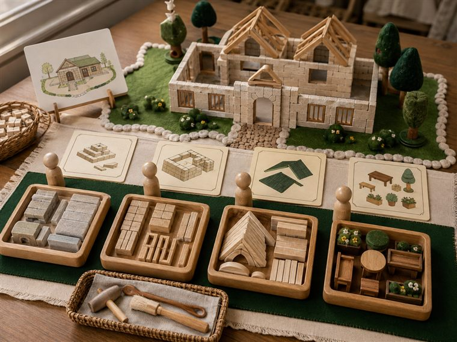

اليوم الرابع · لكلِّ فردٍ مسؤولية؛ أتحمّلُ مسؤوليتي وأتعاون
مساحاتُ لعبٍ حرّ. لكثرة الأعداد نفتح ٤ أركانٍ متوازية بمراكز مختلفة؛ وزّعي المجموعات عليها وتتناوب بينها في الفترتين حتى لا تتكدّس. كل ركنٍ لمسةٌ تكاملية مع اللعب تجمع دروس اليوم: مسؤوليات أفراد العائلة (علّمني) · اللهُ يراني والملائكةُ تكتبُ عملي (كتابي · الإنفطار) — تذكيرًا لا تجسيدًا لهيبة الغيب. (أعمار ٥–٦: بناء/رمل وقوالب/فرز واكتشاف/تلوين جاهز/قصّ ولصق/حركة — بلا كتابةٍ أو رسمٍ حرّ.)

🏖 الرمل · «بيتُ عائلتي في الرمل»
يشكّل الأطفال بيتًا وحديقةً بقوالب الرمل ويوزّعون مواقعَ العائلة (المطبخ · الحديقة · الغرف)، ويتحدّثون عن مسؤولية كل فرد فيها لعبًا.
🧰 الأدوات: رملٌ لعبيّ · قوالبُ (بيت · شجرة · أدوات) · أدواتُ حفرٍ وتشكيل · مجسّماتٌ بلا ملامح.
📋 دور المعلمة: توجّه العملَ الجماعيَّ بالتناوب؛ تسأل «مَن مسؤولٌ عن المطبخ؟ عن الحديقة؟»؛ تُرسّخ التعاون وتحمّل المسؤولية.
🌱 المعنى المركزي: لكلِّ فردٍ دورٌ في البيت؛ أتعاونُ وأُتقنُ دوري.
📜 قوانين الركن: أبقى في ركني حتى ينتهي الوقت · أحافظ على أدواته · أتشارك وأنتظر دوري · أُعيد الأدوات مرتّبة.

🔎 أكتشف · «مَن يفعلُ ماذا؟ — أوزّعُ المسؤوليات»
يتفحّص الطفل بطاقاتِ المسؤوليات المصوّرة بالعدسة (يرتّب · يطبخ · يساعد · يسقي)، ثم يصنّفها ويوزّعها على أفراد العائلة (دُمى/بطاقاتٌ بلا ملامح): مَن يفعلُ ماذا في البيت؛ لعبًا وحركةً بلا كتابة.
🧰 الأدوات: عدسةٌ مكبّرة · بطاقاتُ مسؤولياتٍ مصوّرة (يرتّب/يطبخ/يساعد) · بطاقاتُ أفراد العائلة بلا ملامح · لوحةُ توزيعٍ وصناديقُ فرز.
📋 دور المعلمة: تُدير الاكتشافَ والتوزيعَ لعبًا؛ تسأل «مَن يقومُ بهذه المسؤولية في بيتك؟»؛ تُبيّن أنّ لكلِّ فردٍ دورًا وأنّ التعاون يكملها.
🌱 المعنى المركزي: أعرفُ مسؤوليةَ كلِّ فردٍ في عائلتي وأوزّعها وأتعاونُ في أدائها.
📜 قوانين الركن: أبقى في ركني حتى ينتهي الوقت · أحافظ على أدواته · أتشارك وأنتظر دوري · أُعيد الأدوات مرتّبة.

🧱 البناء · «أبني وأتحمّلُ مسؤولية الترتيب» (لا تلوين)
يبني الأطفال مرافقَ البيت بالمكعبات بأدوارٍ موزّعة، ثم يرتّبون ويعيدون المكعبات إلى صناديقها في النهاية (مسؤولية الترتيب)، ويضعون بطاقاتِ المسؤوليات الجاهزة.
🧰 الأدوات: مكعباتٌ خشبية · صناديقُ ترتيبٍ مُعنونة بالصور · بطاقاتُ مسؤولياتٍ جاهزة (بلا أقلام تلوين).
📋 دور المعلمة: توزّع الأدوار وتجعل الترتيبَ جزءًا من اللعب؛ تُثني على مَن أدّى مسؤوليته؛ تذكّر بأنّ الله يرى إتقاننا (تذكيرًا لا تجسيدًا).
🌱 المعنى المركزي: أتحمّلُ مسؤوليتي في البناء والترتيب ولا أتركها لغيري.
📜 قوانين الركن: أبقى في ركني حتى ينتهي الوقت · أحافظ على أدواته · أتشارك وأنتظر دوري · أُعيد الأدوات مرتّبة.
🎨 فنوني · «لوحةُ مسؤولياتي»
يلوّن الطفل بطاقاتِ المسؤوليات الجاهزة (أرتّب سريري · أسقي النبتة · أساعد أمي · أجمع ألعابي) ويقصّها ويلصقها في لوحة مسؤولياتي ويردّدها.
🧰 الأدوات: بطاقاتُ المسؤوليات الجاهزة للتلوين · أقلام تلوين · مقصٌّ آمن · لاصق · لوحةٌ فردية/جماعية.
📋 دور المعلمة: تسمّي كلَّ مسؤوليةٍ بالصورة؛ تعين على القصّ واللصق؛ تُرغِّب في أداء المسؤولية بفرحٍ لا إكراه.
🌱 المعنى المركزي: أعرفُ مسؤوليتي في بيتي وأؤدّيها بنفسي.
📜 قوانين الركن: أبقى في ركني حتى ينتهي الوقت · أحافظ على أدواته · أتشارك وأنتظر دوري · أُعيد الأدوات مرتّبة.